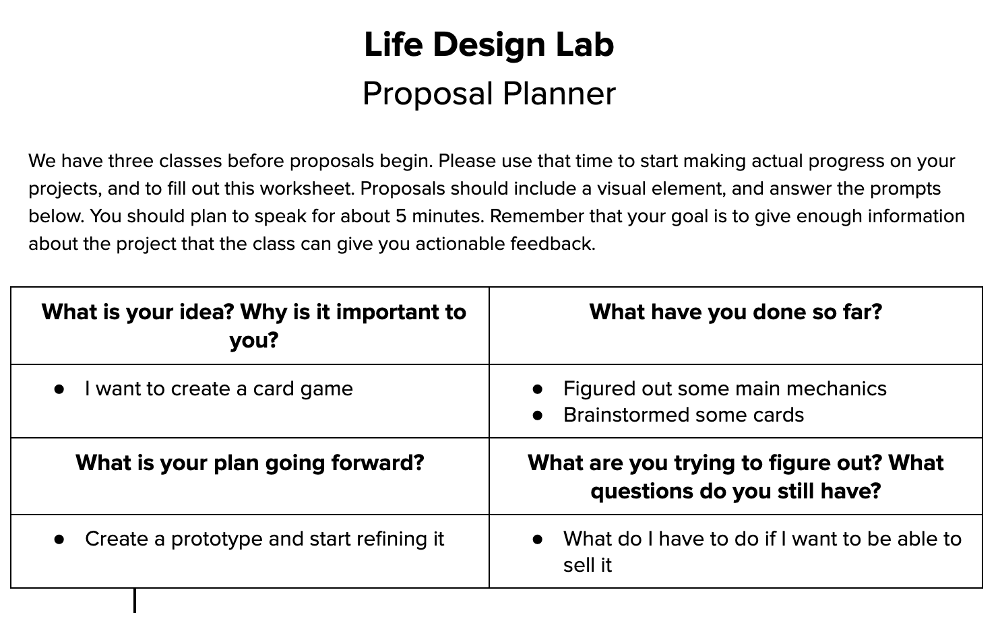
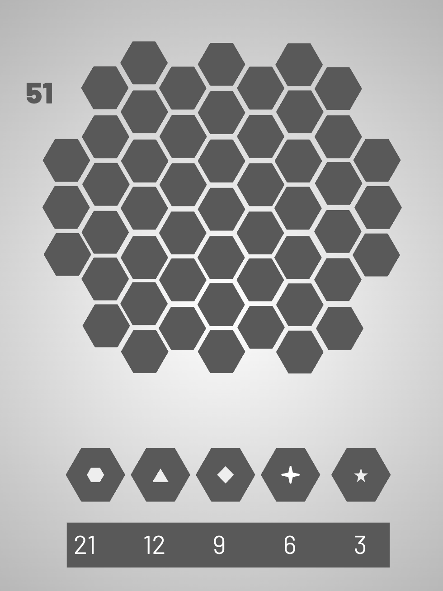

Flagship case study • 2025
Meteor Mayhem
An original multiplayer strategy card game about resource collection, ship upgrades, disruption, probability, and player decision-making.

The challenge
Can luck matter without deciding who wins?
I wanted players to make real decisions: when to collect resources, when to upgrade, when to disrupt someone else, and when to protect their own strategy. The hard part was making the game unpredictable without making it feel random or unfair.
Design goals
Meaningful choices
Players should have more than one reasonable path to winning.
Risk vs. reward
Mining stronger resources should feel tempting, but not automatic.
Player interaction
Events and disasters should create tension without ruining the game.
Replayability
Different draws and choices should create different outcomes.
Readable rules
Players should understand cards quickly enough to focus on strategy.
Balance
No single strategy should feel obviously dominant every time.
Process
Broad idea • mechanics • prototype • testing • revision.
Studied strategy games and card systems.
Brainstormed mechanics, card types, and win conditions.
Built a playable version with cards and components.
Watched players use the system in unexpected ways.
Adjusted effects, resources, and interactions.
Early documentation
The messy part matters.
A lot of the real design happened before the final cards existed. These planning documents show the project becoming more focused over time.




System breakdown
Interacting systems create the strategy.
Resource System
Different values create timing and risk decisions.
Upgrade System
Ship upgrades alter capacity, mining strength, and long-term plans.
Tool System
Protection, stealing, recycling, and extra actions create tactical options.
Event System
Swaps, trades, and blockades force adaptation.
Disaster System
Hazards add pressure and prevent one perfect plan.
Scoring System
Total resource value decides the winner, not just the number of cards.
Card design + UX
Readable cards, clear categories, fast decisions.
I used color, icons, short text, and consistent layouts so players could identify card types and understand effects without stopping the game every turn.


Balancing
Balance was part math, part player psychology.

Testing + iteration
Players never behave exactly how you expect.
I modeled win probabilities based on deck composition and draw outcomes, then used playtesting to see whether the game felt balanced in practice. Some mechanics looked fair on paper but felt frustrating when real players used them.
Video walkthrough
Watch Meteor Mayhem in action.
A short presentation showing the prototype, components, and gameplay system.
Reflection
What I would carry into Version 2.
Iteration beats the first idea.
The game improved most when I was willing to change or remove mechanics that were not working.
Balance is felt by players.
A card can look mathematically fair but still feel annoying or too punishing during play.
Feedback creates better systems.
Testing with other players showed me interactions I never would have found alone.
Additional work
Roblox design studies + current projects.

Roblox Design Studies
Worldbuilding, player agency, and community-driven gameplay.
PY
Interactive Python Game
In development: gameplay logic, state management, and player interaction.
%
TCG Matchup Probability Simulator
In development: modeling matchups, deck probabilities, and competitive outcomes.